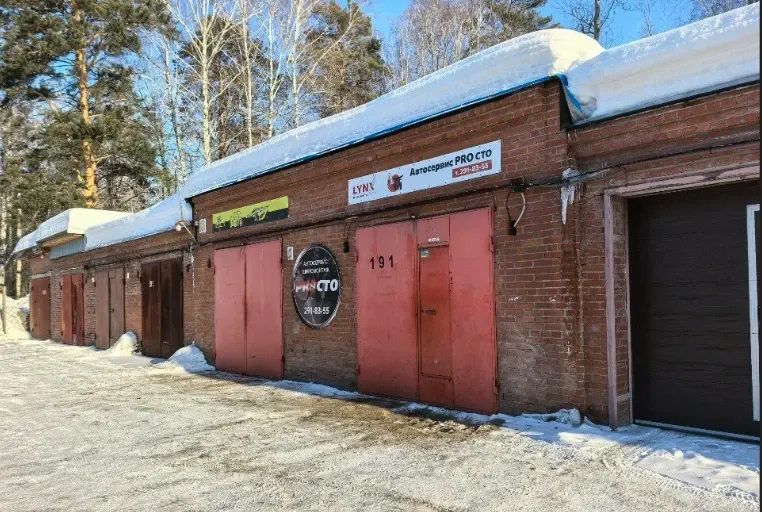
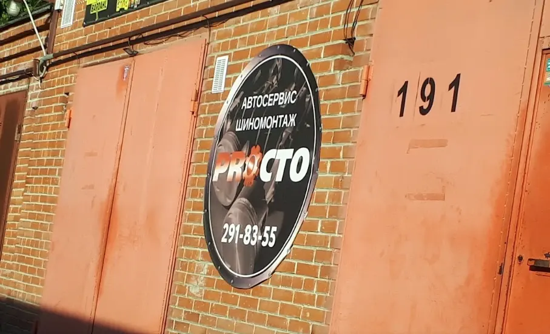
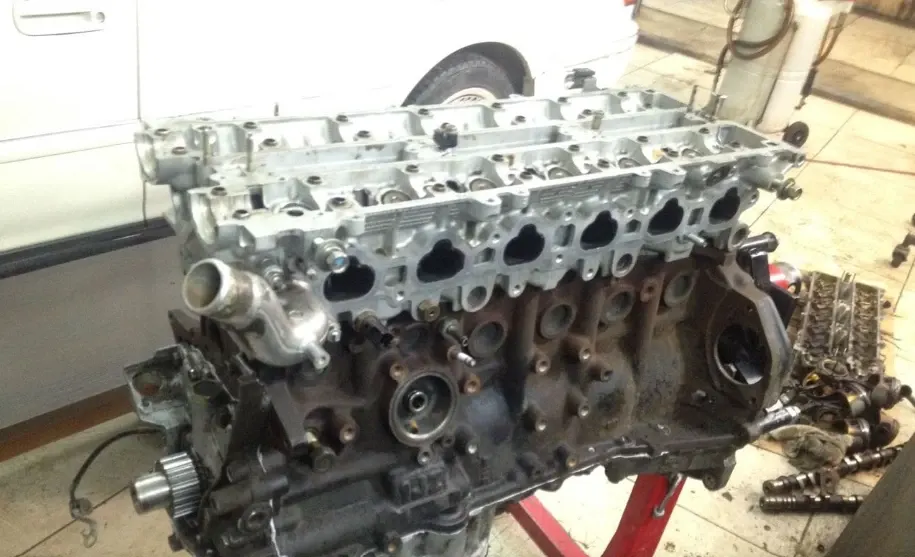
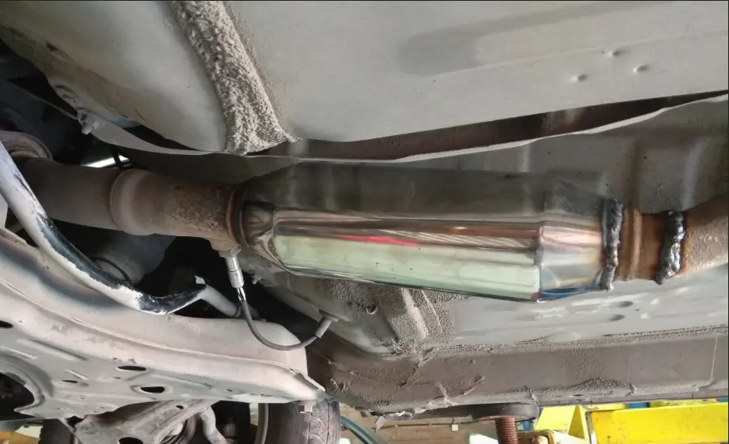

ПРО СТО
Авторемонт, ремонт ходовой части автомобиля, проточка тормозных дисков, замена масла
- Рейтинг 5 в 2ГИС по 69 оценкам, 54 отзыва
- Академгородок, улица Терешковой, 33/1, 191 бокс
- Оплата наличными и переводом с карты

Как устроена работа
Входит
- Диагностика, ремонт и замена масла в одном боксе
- Цену называют заранее, без навязывания лишних услуг – по отзывам
- Показывают старые запчасти и объясняют, что сделали – по отзывам
- Можно присутствовать в ремонтной зоне – по отзывам
- 5 парковок рядом, остановка Морской проспект в 900 м
Отдельно, если нужно
- Итоговая цена ремонта зависит от автомобиля и объёма работ
- Стоимость называют после диагностики
Услуги и цены
Прайса на карточке в 2ГИС нет. Цену называют после диагностики, до начала работ.
Диагностика и ремонт
- Компьютерная диагностикауточнить
- Ремонт ходовой частиуточнить
- Ремонт бензиновых двигателейуточнить
- Замена маслауточнить
- Проточка тормозных дисковуточнить
Выхлоп, электрика, системы
- Ремонт выхлопных системуточнить
- Ремонт стартеров и генераторовуточнить
- Ремонт инжекторовуточнить
- Обслуживание климатических системуточнить
Цены не указаны на карточке в 2ГИС – уточнить при записи.
Четыре шага от записи до выдачи
- 01
Записались
Позвонили или написали в мессенджер, назвали марку и что случилось.
- 02
Диагностика
Смотрят автомобиль, слушают симптомы, находят причину.
- 03
Согласование
Называют цену и сроки, вы решаете, что делать.
- 04
Ремонт и выдача
Делают работу, показывают старые запчасти, отдают машину.



Что говорят клиенты
Цену называют заранее
«Честная оценка стоимости. Цену называют заранее, без навязывания лишних услуг» – из отзыва в 2ГИС.
Объясняют простыми словами
«Владимир объясняет суть неисправностей, даже человек без технических знаний сможет разобраться» – из отзыва в 2ГИС.
Берутся за сложное
«Со своими автомобилями в этом городе — только сюда!» – из отзыва в 2ГИС.
Работают быстро
«Благодарю Владимира за такую скорость работы и непредвзятость к водителю-девушке» – из отзыва в 2ГИС.
Отзывы с 2ГИС
«Со своими автомобилями в этом городе — только сюда!»
Владислав Шолеров
«Честная оценка стоимости. Цену называют заранее, без навязывания лишних услуг.»
Лена Киндякова
«Благодарю Владимира за такую скорость работы и непредвзятость к водителю-девушке. Редкое сейчас сочетание.»
Тая Романова
Отзывы с карточки в 2ГИС, дословно.
Частые вопросы
Как записаться?
Позвоните по телефону +7 913 915-83-55 либо напишите в WhatsApp или Telegram.
Где вы находитесь?
Улица Терешковой, 33/1, 191 бокс, гараж, 1 этаж, Академгородок. Рядом 5 парковок.
Какие услуги у вас есть?
Компьютерная диагностика, ремонт ходовой, двигателя, выхлопной системы, замена масла, проточка тормозных дисков.
Когда вы работаете?
График уточняйте по телефону при записи.
Запишитесь на диагностику
- Адрес
- улица Терешковой, 33/1, 191 бокс, Новосибирск, Академгородок
- Часы
- График уточняйте по телефону
- Телефон
- +7 913 915-83-55